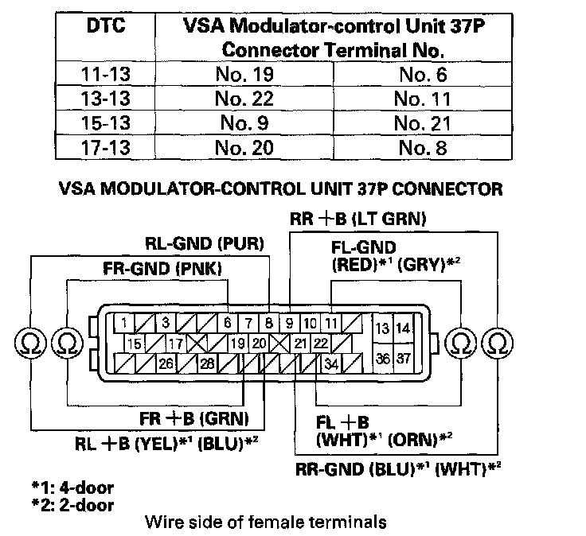
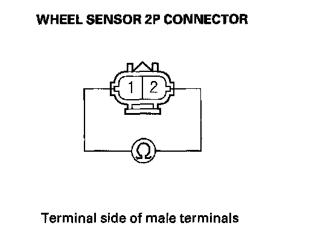
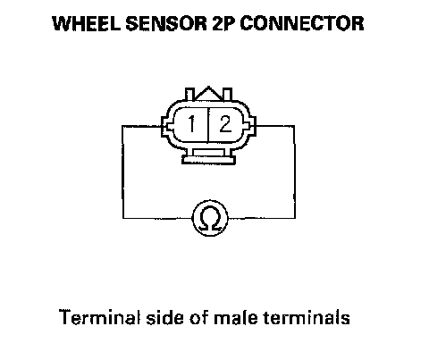
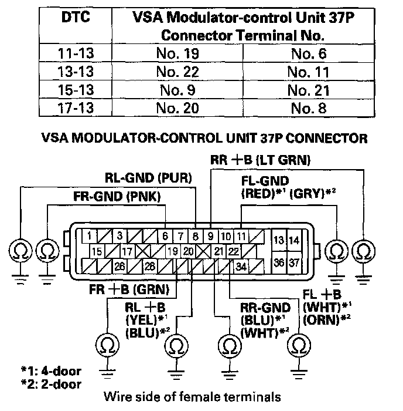
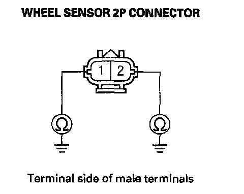
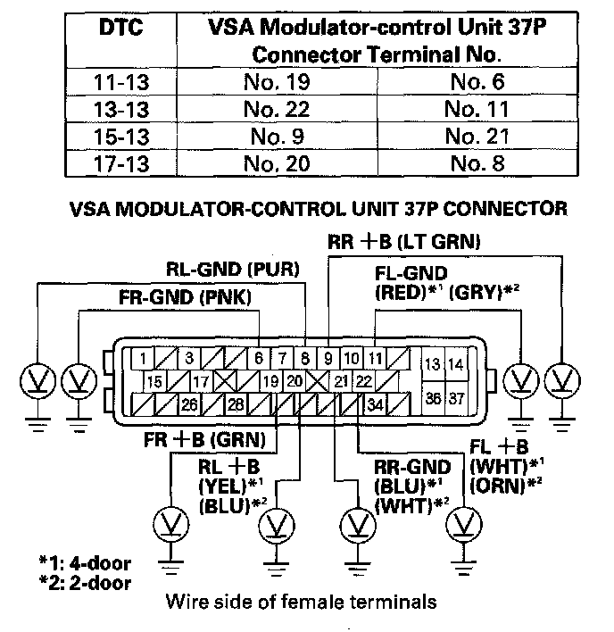

DTC 15-13
DTC 11-13: Right-front Wheel Sensor Circuit MalfunctionDTC 13-13: Left-front Wheel Sensor Circuit Malfunction
DTC 15-13: Right-rear Wheel Sensor Circuit Malfunction
DTC 17-13: Left-rear Wheel Sensor Circuit Malfunction
1. Turn the ignition switch ON (II).
2. Clear the DTC with the HDS.
3. Turn the ignition switch OFF, then turn it ON (II) again.
4. Check for DTCs with the HDS.
Is DTC 11-13, 13-13, 15-13, and/or 17-13 indicated?
YES - Go to step 5.
NO - Intermittent failure, the system is OK at this time. Check for loose terminals between the wheel sensor 2P connector and the VSA modulator-control unit 37P connector. Refer to intermittent failures troubleshooting.
5. Turn the ignition switch OFF.
6. Disconnect the VSA modulator-control unit 37P connector.
7. Check for continuity between the appropriate VSA modulator-control unit 37P connector wheel sensor +B and GND terminals (see table), then check for continuity between the same terminals and reverse the positive and negative tester probes.

Is there continuity in both directions?
YES - Go to step 8.
NO - If there is no continuity in either direction, go to step 10. If there is continuity in only one direction, go to step 12.
8. Disconnect the appropriate wheel sensor 2P connector.
9. On the sensor side, check for continuity between appropriate wheel sensor 2P connector terminals No. 1 and No. 2, then check for continuity between the same terminals and reverse the positive and negative tester probes.

Is there continuity in both direction?
YES - Replace the appropriate wheel sensor.
NO - Repair short in the wire between the appropriate wheel sensor and the VSA modulator-control unit.
10. Disconnect the appropriate wheel sensor 2P connector.
11. On the sensor side, check for continuity between appropriate wheel sensor 2P connector terminals No. 1 and No. 2, then check for continuity between the same terminals and reverse the positive and negative tester probes.

Is there continuity in only one direction?
YES - Repair open in the wire between the appropriate wheel sensor and the VSA modulator-control unit.
NO - Replace the appropriate wheel sensor.
12. Check for continuity between body ground and the appropriate VSA modulator-control unit 37P connector terminal (see table).

Is there continuity?
YES - Go to step 13.
NO - Go to step 15.
13. Disconnect the appropriate wheel sensor 2P connector.
14. On the sensor side, check for continuity between body ground and appropriate wheel sensor 2P connector terminal No. 1 and No. 2 individually.
NOTE: Check the wheel sensor while mounted on the vehicle.

Is there continuity?
YES - Replace the appropriate wheel sensor.
NO - Repair short to body ground in the wire between the appropriate wheel sensor and the VSA modulator-control unit.
15. Turn the ignition switch ON (II).
16. Measure voltage between body ground and the appropriate VSA modulator-control unit 37P connector terminal (see table).

Is there 0.1 V or more?
YES - Repair short to power in the wire between the appropriate wheel sensor and the VSA modulator-control unit.
NO - Check for loose terminals in the VSA modulator-control unit 37P connector. If necessary, substitute a known-good VSA modulator-control unit, and retest.